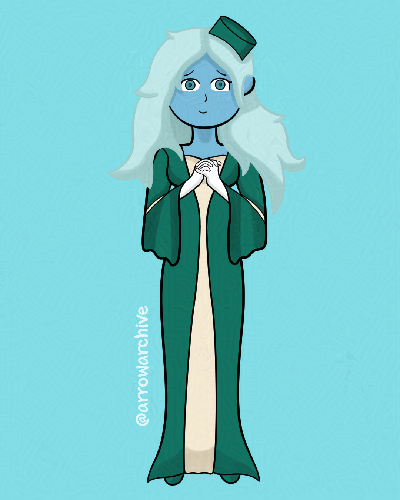

Introducing: Cadence
In July, I was browsing through some old sketchbooks when I found a doodle I wanted to make into a drawing. I liked her hairstyle and I wanted to practice drawing ears, so I saved the doodle and made a full piece for her.
She is bashful and dislikes bringing attention to herself, unlike her sisters who crave it. Because of that, I made her appearance regal yet modest, and her sisters will look more extravagent in comparison. Her design is simple but elegant, and I need to draw her again.